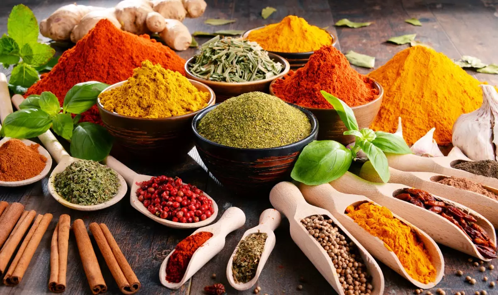
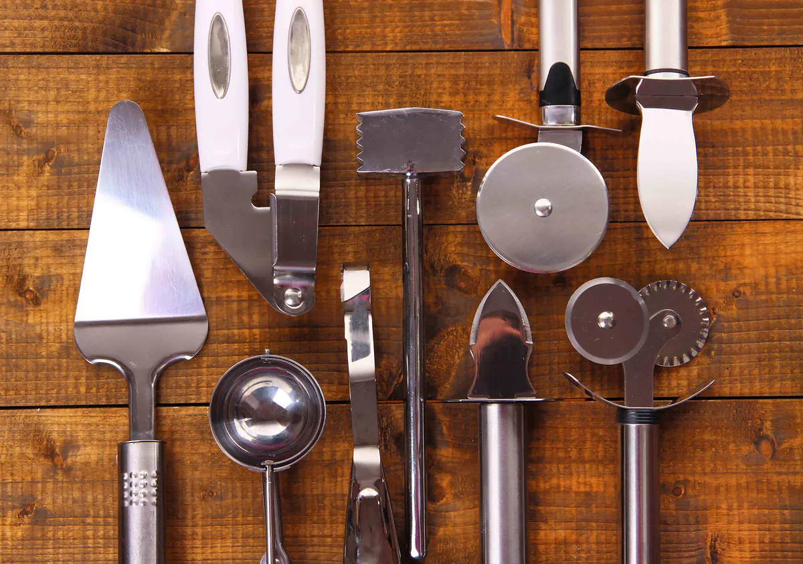

Zapoznaj się z kuchniami na całym świecie
przekazywane z pokolenia na pokolenie. Smaki to bardzo ważny element podróży, ponieważ pozwalają nam poznać dany kraj, jego kulturę i styl życia.
Dla wielu osób próbowanie nowych potraw w trakcie podróży, jest porównywalnie ważne jak dla innych zaliczenie muzeów, czy zwiedzanie zabytków.
Można powiedzieć, że jest to nieodłączny element kultury i tożsamości każdego narodu.
Specyfika danej kuchni sprawia, że jesteśmy w stanie wrócić wspomnieniami nie tylko do pięknych krajobrazów, wspaniałych ludzi i przygód, ale również pozwala
skojarzyć je z konkretnymi potrawami. Ciężko jest wyobrazić sobie wyjazd do Włoch bez zjedzenia pizzy, czy pasty, a Grecji bez fety i wina.
Poznawanie nowych kuchni może urozmaicić i zainspirować naszą własną, o ciekawe rozwiązania smakowe i egzotyczne składniki. Zapoznaj się z kulinarnymi
tradycjami z całego świata i pobudź kubki smakowe do podróży!

Kuchnia jako pasja
Pasja to nie tylko hobby, to całkowite poświęcenie się temu, co czyni nas szczęśliwymi.Pasja do gotowania kiełkuje w wielu już w dzieciństwie i w miarę upływu czasu staje się istotnym składnikiem codzienności Kulinarny świat potrafi wciągnąć na dobre, a praca przyprawiona oddaniem i chęcią rozwoju kształtuje najlepszych mistrzów sztuki kulinarnej. Mówi się, że praca w kuchni nie należy do najłatwiejszych, ale jak twierdzi nasz rozmówca, zamiłowanie do gotowania oraz dobre chęci wystarczą, aby odnaleźć się w świecie gastronomii.
Czym powinień odznaczać się dobry kucharz?
przypadki zarażenia bakteriami i choroby spowodowane nieświeżą żywnością nie będą mieć miejsca;
W takich sytuacjach pomoże opanowanie kucharza i szukanie rozwiązania problemu;
W takiej sytuacji należy przeprosić klientów i zaproponować im rekompensatę. Gorzej, jeśli goście się awanturują i konieczne są
negocjacje odnośnie zwrotu pieniędzy itp. Kucharz powinien wykazać się spokojem i opanowaniem – tak, by rozwiązać konflikt pokojowo;
na posiłki - to częste zjawiska w restauracjach i barach. Niektóre osoby pod wpływem presji stresują się i wpadają w panikę.
Jednak kucharz powinien zachować spokój, rozdzielić odpowiednio zadania wśród zespołu i działać efektywnie.
Formularz
Podziel się z nami jaką kuchnie kochasz